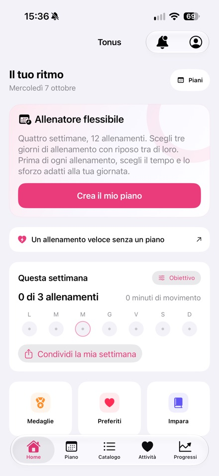
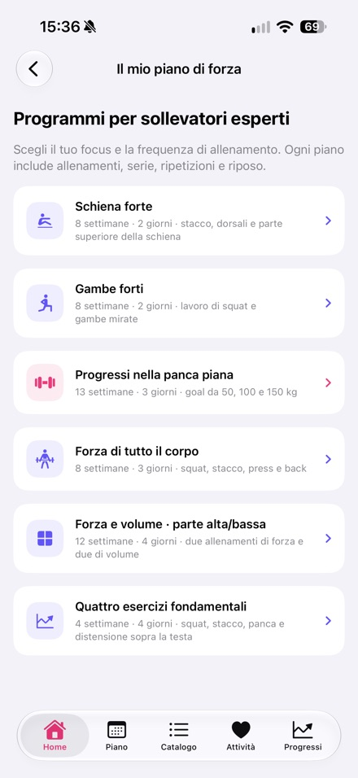
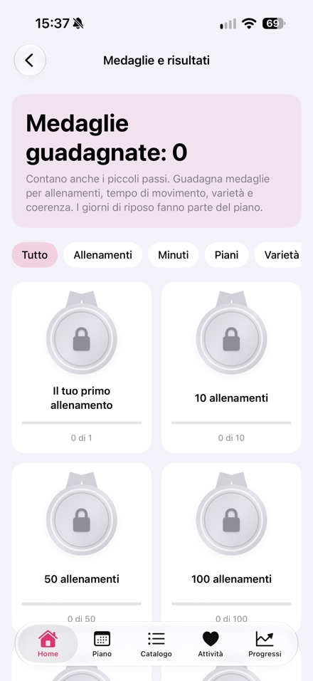

Nikita Revin, sviluppatore di Tonus · Aggiornato il 16 ottobre 2026
Informazioni dello sviluppatore e schermate della versione pubblicata per preparare una recensione dell’app.
Kit stampa
Il file contiene informazioni sul prodotto, l’icona e tre schermate della versione pubblicata in italiano.
Scarica il kit stampa (.zip)Tonus 1.4
- iPhone con iOS 17 o successivo.
- Accesso gratuito, senza registrazione, abbonamenti o acquisti in-app.
- Allenamenti a casa da 5, 10 o 20 minuti, con opzioni senza salti, in piedi e senza attrezzi.
- Allenatore flessibile con 12 sessioni nei giorni scelti; le sessioni saltate vengono spostate e quelle completate rimangono nello storico.
- Sei programmi di forza per la palestra, rivolti a chi ha esperienza con il sollevamento pesi.
- Integrazione facoltativa con Apple Salute e storico degli allenamenti salvato localmente.
- I piani e le istruzioni scritte funzionano offline; per i video serve internet.
- Video per 60 esercizi. I servizi video esterni possono mostrare i propri annunci.
- Interfaccia disponibile in italiano.
Schermate di App Store






Contatti dello sviluppatore
Nikita Revin · nik007rev@gmail.com